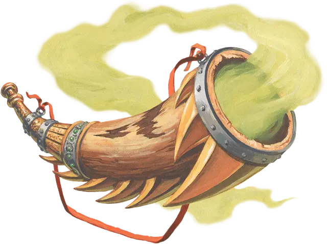

Рог Иггвилв
Iggwilv’s Horn
Чудесный предмет, редкий (требуется настройка)

Рекомендованная стоимость 501-5 000 зм
Действием вы можете подуть в рог и наложить одно из следующих заклинаний: руки Хадара [arms of Hadar], туманное облако [fog cloud], порыв ветра [gust of wind], паутина [web] (Сл спасброска 13).
После того, как рог был использован для наложения заклинания, его нельзя использовать для наложения этого же заклинания до следующего рассвета.